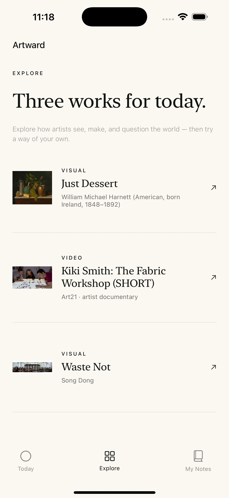
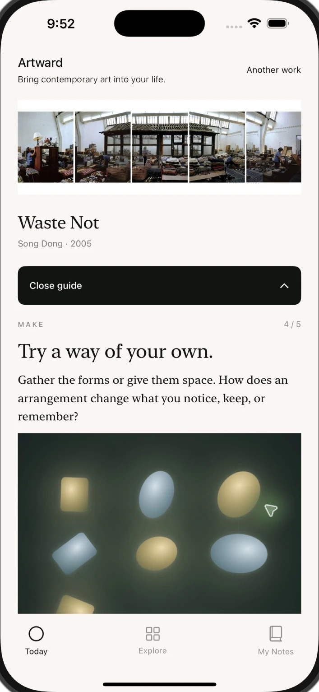
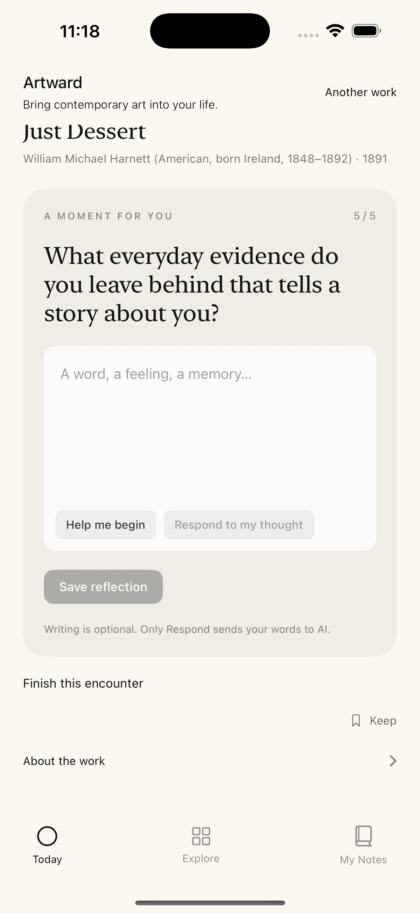

01 / DISCOVER
Three works.
Room to go deeper.
A daily selection of artworks and artist films. Follow a guide that opens up the artist’s process, questions, and inspiration.
CONTEMPORARY ART · EVERYDAY LIFE
Bring contemporary art into your life.
Discover how artists see the world. Make a creative response of your own. Let a new perspective follow you into the everyday.
Join the iPhone beta ↗Available on TestFlight · No art background needed

A work of art. A way into your own life.
ART IS CLOSER THAN YOU THINK
An object we keep. A gesture we repeat. A question we can’t quite answer. Contemporary art grows from life—and can help us return to it with fresh eyes.
Artward offers a gentle way in: look closely, understand the artist’s ideas, and discover what happens when you try something yourself.
LOOK · MAKE · REFLECT

01 / DISCOVER
A daily selection of artworks and artist films. Follow a guide that opens up the artist’s process, questions, and inspiration.
02 / CREATE
Move, draw, and experiment with light, form, and sound in an interactive experience inspired by the work. Share an image of what you create.

03 / REFLECT
A moment to put your experience into words. Optional AI prompts help you begin. My Notes holds your personal trail of discoveries.
AN INVITATION
Help shape Artward. Try the beta, explore an encounter,
and tell us what stayed with you.
1 Install Apple’s free TestFlight app.
2 Open our beta link and tap Accept.
3 Install Artward. Begin with a work.
On a computer? Open this page on your iPhone to join.